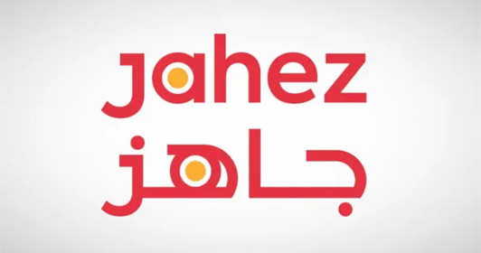
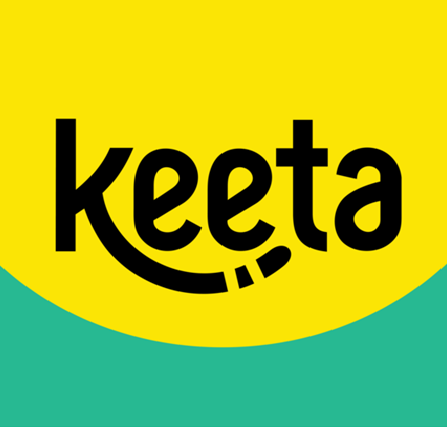
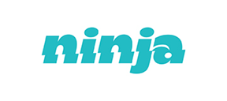

توريد القوى العاملة
كوادر تشغيلية وفنية مدربة لدعم مواقع العمل حسب طبيعة النشاط والاحتياج اليومي.
عرض التفاصيل +حلول القوى العاملة والخدمات المساندة
نقدم حلول إدارة مرافق تركّز على توفير وتشغيل الكوادر، النظافة، الضيافة، الأمن، والصيانة لدعم أعمال المنشآت داخل المملكة منذ عام 2008.
سنة من الخبرة
مشروع منجز
كوادر تشغيلية

تأسست صقور الإتقان عام 2008، ونمت كشريك تشغيلي موثوق في إدارة المرافق من خلال توفير وتشغيل القوى العاملة والخدمات المساندة للقطاعات التجارية والصناعية والسكنية داخل المملكة.
Saqour Al-Itqan was established in 2008 and has grown into a trusted operational partner in facility management, focusing on workforce deployment and support services for commercial, industrial, and residential sectors across Saudi Arabia.
لماذا نحن
اختيار وتشغيل فرق مناسبة لطبيعة كل موقع.
متابعة يومية لضمان الانضباط وجودة الأداء.
توفير ودعم حسب احتياج المنشأة وحجم التشغيل.
خدمات مساندة تواكب نمو القطاعات في المملكة.
عملاؤنا







شاركنا احتياجك التشغيلي وسنقترح لك الحل الأنسب من حيث الكوادر والخدمات والإشراف.
تواصل معنا